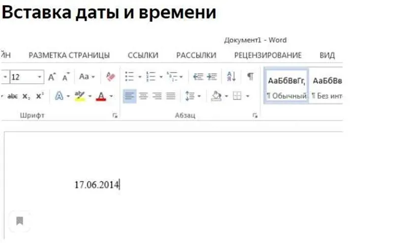
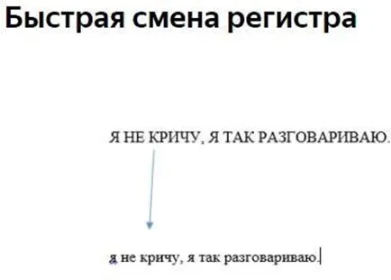
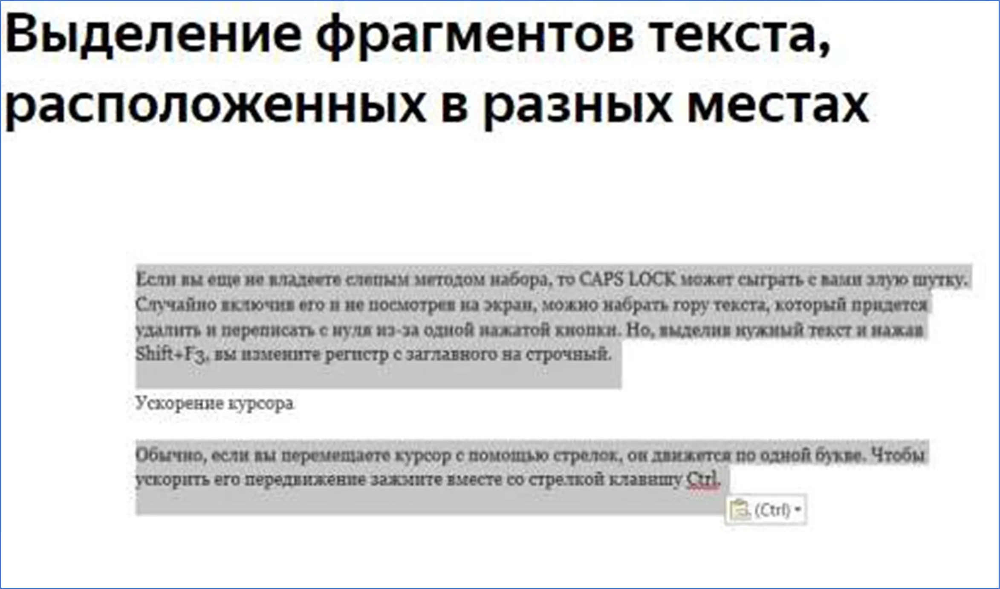

Текстовый процессор.
Создание и форматирование документа. Разметка страницы, шрифты, списки, таблицы, специальные возможности.
Microsoft Word — самый важный и необходимый инструмент для любой офисной работы. Эти советы, помогут вам упростить и ускорить работу с Word и автоматизировать некоторые дела
Быстро вставить дату можно с помощью комбинации клавиш Shift + Alt + D. Дата вставится в формате ДД.ММ.ГГ. Такую же операцию можно проделать и со временем при помощи комбинации Shift + Alt + T.
Если вы ещё не умеете набирать текст слепым методом, то CAPS LOCK может с вами поиграть не на шутку. Случайно включив его и не посмотрев на экран, можно набрать гору текста, который придётся удалить и переписать с нуля из-за одной нажатой кнопки. Но выделив нужный текст и нажав Shift + F3, вы измените регистр с заглавного на строчный.
Ускорение курсора - Обычно, если вы перемещаете курсор с помощью стрелок, он движется по одной букве. Чтобы ускорить его передвижение, зажмите вместе со стрелкой клавишу Сtrl.
Очень полезная функция, которая позволяет выделять непоследовательные фрагменты текста. Удерживайте Ctrl и выделяйте нужные вам куски текста. В принципе выделение проходит также как с папками, то что вам необходимо.
Если вы работаете копированием и вставкой, то, скорее всего, знаете о расширенном буфере обмена в Word. Если нет, то он вызывается нажатием на одноимённую кнопку и показывает всё, что вы копировали в буфер за время работы.

Если вы делаете мануал, обзор сервиса или вам просто нужно вставить скриншот в Word, сделать это можно очень просто с помощью соответствующего инструмента. Нажмите на кнопку «Снимок», и Word покажет все активные окна. Кликнув на любое из них, вы получите скриншот этого окна.
Включение переносов может улучшить читаемост ь текста, а также избавит вас от длинных пустых интервалов между словами. Вы можете расставить их сами или доверить это ПК. Кнопка находится в меню «Разметка страницы» — "Расстановка переносов"
Вы можете добавить водяной знак (watermark) на свой документ для дополнительной защиты. Для этого перейдите в меню «Дизайн» и выберите пункт «Подложка». В Word есть четыре стандартных шаблона, также можно создать
- Повтор предыдущей команды
- Очень нужная функция, которая даст возможность продублировать последнюю команду. Если вы нажмёте F4, то Word повторит последнюю команду, которую вы сделали. Это может быть ввод текста, последовательное удаление нескольких строк, применение стилей для разных отрезков текста и многое другое.
Установите курсор после буквы, на которой должно стоять ударение, и зажмите комбинацию клавиш Alt + 769. Важно: цифры нужно нажимать на цифровой клавиатуре справа.
Верхнюю ленту с кнопками можно очень гибко настроить. Для этого перейдите в меню «Файл» — «Параметры» — «Настроить ленту». Здесь можно добавить функции, которых раньше не было, и удалить те, которые не нужны. Более того, вы можете удалять или создавать свои вкладки с функциями
Быстрое выделение большого куска текста Чтобы быстро выделить большой кусок текста, установите курсор в его начало и кликните мышкой с зажатым Shift в конце фрагмента. Сохранит время и нервы в ситуациях, когда приходится выделять несколько листов сразу.
Быстрое перемещение по документу
Существует несколько комбинаций, которые сильно ускоряют навигацию по документу:
- Ctrl + Alt + Page Down — следующая страница;
- Ctrl + Alt + Page Up — предыдущая страница;
- Ctrl + Home — переместиться вверх документа;
Чтобы защитить документ паролем, перейдите во вкладку «Файл» и выберите опцию «Защита документа». Важно: если вы задубите пароль, то его восстановить невозможно